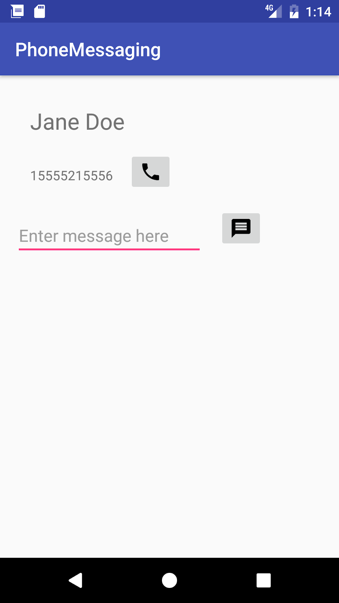
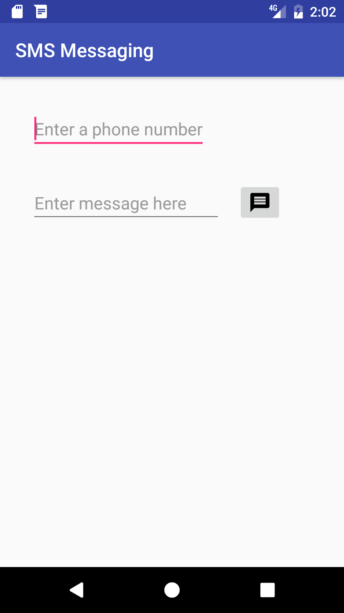
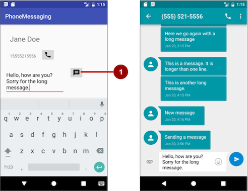
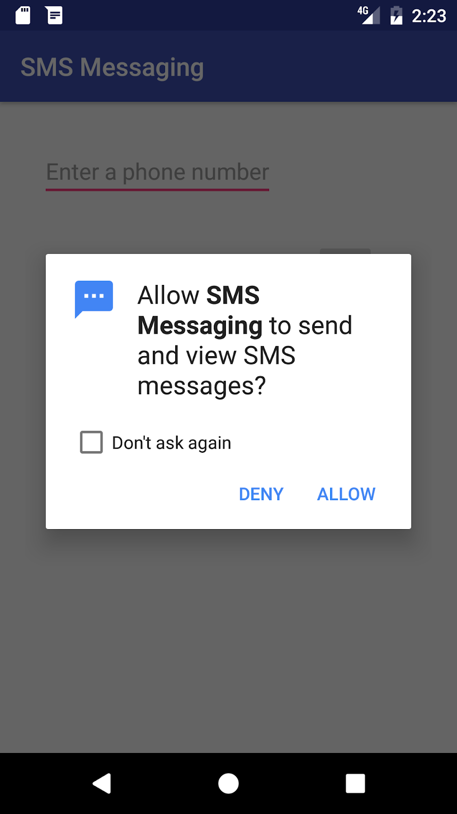
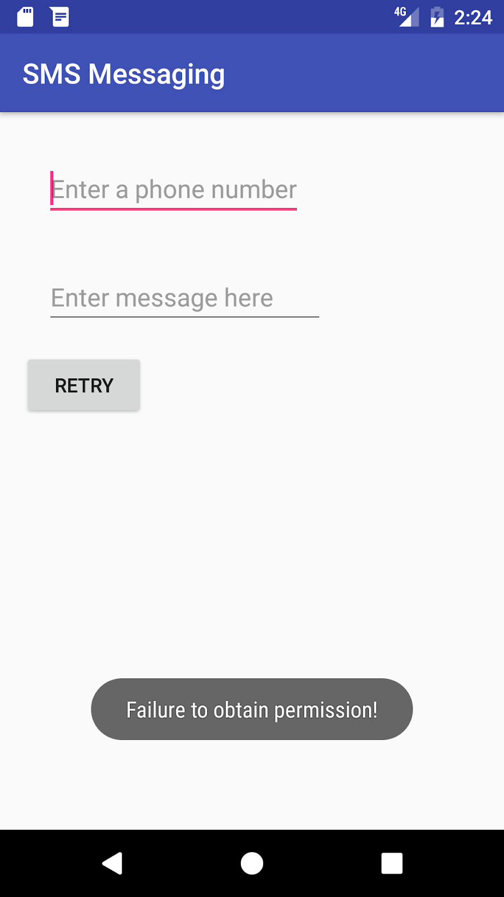
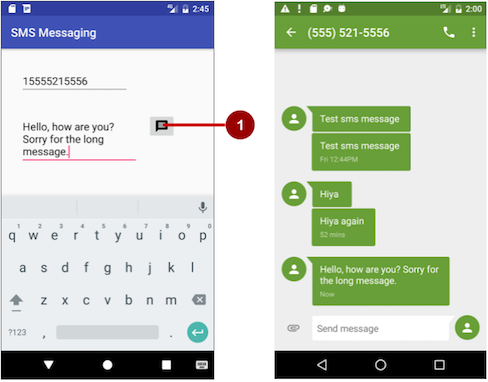
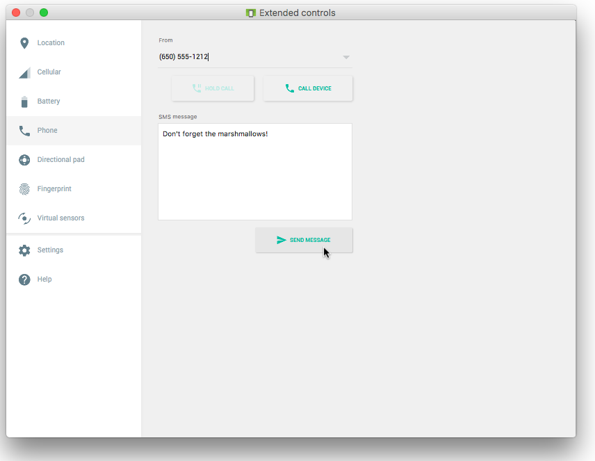
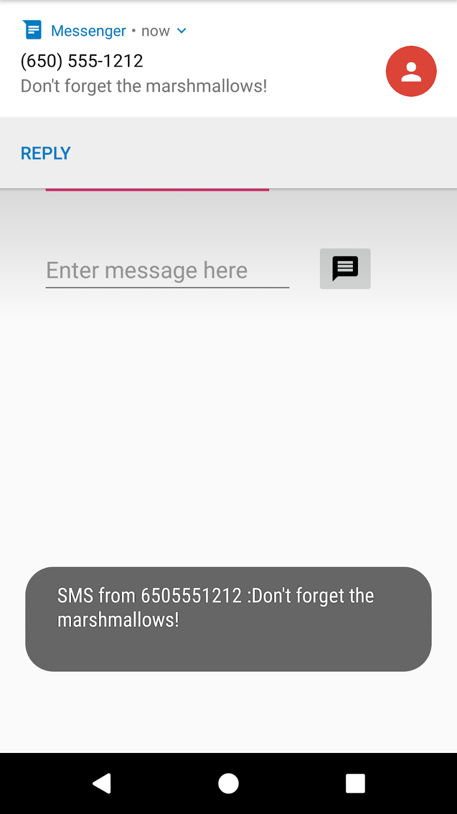
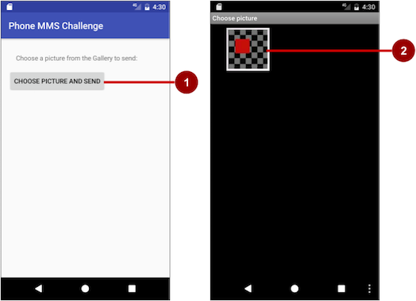
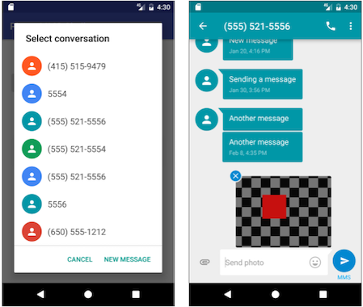

Android smartphones can send and receive messages to or from any other phone that supports Short Message Service (SMS). You have two choices for sending SMS messages:
To receive SMS messages, use the onReceive() method of the BroadcastReceiver class.
onClick method for a button with the android:onClick attribute.You will create two new apps based on apps you created previously about making phone calls:
PhoneCallDial app from the previous chapter, and add code to enable a user to not only dial a hard-coded phone number but also send an SMS message to the phone number. It uses an implicit intent using ACTION_SENDTO and the phone number to launch a messaging app to send the message.PhoneCallDial app already has TextEdit views for the contact name and the hard-coded phone number, and an ImageButton for making a phone call. You will copy the app, rename it to PhoneMessaging, and modify the layout to include an EditText for entering the message, and another ImageButton with an icon that the user can tap to send the message.
PhoneCallingSample app from the previous chapter to enable a user to enter a phone number, enter an SMS message, and send the message from within the app. It checks for permission and then uses the SmsManager class to send the message.PhoneCallingSample app already has an EditText view for entering the phone number and an ImageButton for making a phone call. You will copy the app, rename it to SmsMessaging, and modify the layout to include another EditText for entering the message, and change the ImageButton to an icon that the user can tap to send the message.
In this task you create an app called PhoneMessaging, a new version of the PhoneCallDial app from a previous project. The new app launches a messaging app with an implicit intent, and passes a fixed phone number and a message entered by the user.
The user can tap the messaging icon in your app to send the message. In the messaging app launched by the intent, the user can tap to send the message, or change the message or the phone number before sending the message. After sending the message, the user can navigate back to your app using the Back button.
EditText to the existing layout after the phone_icon ImageButton:...
<ImageButton
android:id="@+id/phone_icon"
... />
<EditText
android:id="@+id/sms_message"
android:layout_width="200dp"
android:layout_height="wrap_content"
android:layout_below="@id/number_to_call"
android:layout_marginTop="@dimen/activity_vertical_margin"
android:layout_marginRight="@dimen/activity_horizontal_margin"
android:hint="Enter message here"
android:inputType="textMultiLine"/>You will use the android:id sms_message to retrieve the message in your code. You can use @dimen/activity_horizontal_margin and @dimen/activity_vertical_margin for the EditText margins because they are already defined in the dimens.xml file. The EditText view uses the android:inputType attribute set to "textMultiLine" for entering multiple lines of text.
android:layout_width="@dimen/edittext_width": The width of the EditText message (200dp).android:hint="@string/enter_message_here": The hint for the EditText ("Enter message here").ImageButton to the layout after the above EditText:<ImageButton
android:id="@+id/message_icon"
android:contentDescription="Send a message"
android:layout_width="wrap_content"
android:layout_height="wrap_content"
android:layout_marginTop="@dimen/activity_vertical_margin"
android:layout_toRightOf="@id/sms_message"
android:layout_toEndOf="@id/sms_message"
android:layout_below="@id/phone_icon"
android:src="@drawable/ic_message_black_24dp"
android:onClick="smsSendMessage"/>You will use the android:id message_icon to refer to the ImageButton for launching the messaging app. Use the vector asset you added previously (such as ic_message_black_24dp for a messaging icon) for the ImageButton.
android:contentDescription attribute, extract it into the resource send_a_message.smsSendMessage() method referred to in the android:onClick attribute remains highlighted until you create this method in the MainActivity, which you will do in the next step.smsSendMessage in the android:onClick attribute, click the red light bulb that appears, and then select Create smsSendMessage(View) in 'MainActivity'. Android Studio automatically creates the smsSendMessage() method in MainActivity as public, returning void, with a View parameter. This method is called when the user taps the message_icon ImageButton.public void smsSendMessage(View view) {
}Your app's layout should now look like the following figure:
smsSendMessage() method in MainActivity, get the phone number from the number_to_call TextView, and concatenate it with the smsto: prefix (as in smsto:14155551212) to create the phone number URI string smsNumber:...
TextView textView = (TextView) findViewById(R.id.number_to_call);
// Use format with "smsto:" and phone number to create smsNumber.
String smsNumber = String.format("smsto: %s",
textView.getText().toString());
...EditText view:...
// Find the sms_message view.
EditText smsEditText = (EditText) findViewById(R.id.sms_message);
// Get the text of the SMS message.
String sms = smsEditText.getText().toString();
...smsIntent) with the intent action ACTION_SENDTO, and set the phone number and text message as intent data and extended data, using setData() and putExtra:...
// Create the intent.
Intent smsIntent = new Intent(Intent.ACTION_SENDTO);
// Set the data for the intent as the phone number.
smsIntent.setData(Uri.parse(smsNumber));
// Add the message (sms) with the key ("sms_body").
smsIntent.putExtra("sms_body", sms);
...The putExtra() method needs two strings: the key identifying the type of data ("sms_body") and the data itself, which is the text of the message (sms). For more information about common intents and the putExtra() method, see Common Intents: Text Messaging.
startActivity(), and the system launches the app. If it does not, log an error....
// If package resolves (target app installed), send intent.
if (smsIntent.resolveActivity(getPackageManager()) != null) {
startActivity(smsIntent);
} else {
Log.e(TAG, "Can't resolve app for ACTION_SENDTO Intent");
}
...The full method should now look like the following:
public void smsSendMessage(View view) {
TextView textView = (TextView) findViewById(R.id.number_to_call);
// Use format with "smsto:" and phone number to create smsNumber.
String smsNumber = String.format("smsto: %s",
textView.getText().toString());
// Find the sms_message view.
EditText smsEditText = (EditText) findViewById(R.id.sms_message);
// Get the text of the sms message.
String sms = smsEditText.getText().toString();
// Create the intent.
Intent smsIntent = new Intent(Intent.ACTION_SENDTO);
// Set the data for the intent as the phone number.
smsIntent.setData(Uri.parse(smsNumber));
// Add the message (sms) with the key ("sms_body").
smsIntent.putExtra("sms_body", sms);
// If package resolves (target app installed), send intent.
if (smsIntent.resolveActivity(getPackageManager()) != null) {
startActivity(smsIntent);
} else {
Log.d(TAG, "Can't resolve app for ACTION_SENDTO Intent");
}
}
Android Studio project: PhoneMessaging
In this task you will copy the PhoneCallingSample app from the lesson on making a phone call, rename and refactor it to SmsMessaging, and modify its layout and code to create an app that enables a user to enter a phone number, enter an SMS message, and send the message from within the app.
In the first step you will add the code to send the message, but the app will work only if you first turn on SMS permission manually for the app in Settings on your device or emulator.
In subsequent steps you will do away with setting this permission manually by requesting SMS permission from the app's user if it is not already set.
app_name string resource to "SMS Messaging".android.permission.SEND_SMS permission to the AndroidManifest.xml file, and remove the CALL_PHONE and READ_PHONE_STATE permissions for phone use, so that you have only one permission:<uses-permission android:name="android.permission.SEND_SMS" />
Sending an SMS message is permission-protected. Your app can't use SMS without the SEND_SMS permission line in AndroidManifest.xml. This permission line enables a setting for the app in the Settings app that gives the user the choice of allowing or disallowing use of SMS. (In the next task you will add a way for the user to grant that permission from within the app.)
EditText view and replace the android:layout_margin attribute with the following:...
android:layout_marginTop="@dimen/activity_vertical_margin"
android:layout_marginRight="@dimen/activity_horizontal_margin"
...You can use @dimen/activity_horizontal_margin and @dimen/activity_vertical_margin because they are already defined in the dimens.xml file.
EditText to the layout after the first EditText (for an image of the layout, see the figure at the end of these steps):...
<EditText
android:id="@+id/sms_message"
android:layout_width="@dimen/edittext_width"
android:layout_height="wrap_content"
android:layout_below="@id/editText_main"
android:layout_margin="@dimen/activity_horizontal_margin"
android:hint="Enter message here"
android:inputType="textMultiLine"/>You will use the android:id attribute to sms_message to identify it as the EditText for the message. The EditText view uses the android:inputType attribute set to "textMultiLine" for entering multiple lines of text.
"Enter message here" for the android:hint attribute, extract it into the text resource "enter_message_here".android:layout_below attribute for the button_retry Button to refer to the sms_message EditText view. The Button should appear below the SMS message in the layout if it becomes visible:android:layout_below="@id/sms_message"
The button_retry Button is set to invisible. It appears only if the app detected that telephony is not enabled, or if the user previously denied phone permission when the app requested it.
phone_icon ImageButton from the existing layout with the following:<ImageButton
android:id="@+id/message_icon"
android:contentDescription="Send a message"
android:layout_width="wrap_content"
android:layout_height="wrap_content"
android:layout_marginTop="@dimen/activity_vertical_margin"
android:layout_toRightOf="@id/sms_message"
android:layout_toEndOf="@id/sms_message"
android:layout_below="@id/editText_main"
android:src="@drawable/ic_message_black_24dp"
android:visibility="visible"
android:onClick="smsSendMessage"/>
You will use the android:id message_icon in your code to refer to the ImageButton for sending the message. Use the vector asset you added previously (such as ic_message_black_24dp for a messaging icon) for the ImageButton. Make sure you include the android:visibility attribute set to "visible". You will control the visibility of this ImageButton from your code.
android:contentDescription attribute, extract it to the send_a_message string resource.smsSendMessage() method referred to in the android:onClick attribute for the ImageButton remains highlighted until you create this method in the MainActivity, which you will do in the next step.smsSendMessage in the android:onClick attribute, click the red light bulb that appears, and then select Create smsSendMessage(View) in 'MainActivity'. Android Studio automatically creates the smsSendMessage() method in MainActivity as public, returning void, with a View parameter. This method is called when the user taps the message_icon ImageButton.public void smsSendMessage(View view) {
}Your app's layout should look like the following figure (the button_retry Button is invisible):
msSendMessage() method you created in the last step.editText_main view, and get the string for the SMS message from the sms_message view:public void smsSendMessage(View view) {
EditText editText = (EditText) findViewById(R.id.editText_main);
// Set the destination phone number to the string in editText.
String destinationAddress = editText.getText().toString();
// Find the sms_message view.
EditText smsEditText = (EditText) findViewById(R.id.sms_message);
// Get the text of the sms message.
String smsMessage = smsEditText.getText().toString();
...
}PendingIntent parameters for the sendTextMessage() method, which will send the message (destinationAddress is already declared as the string for the phone number to receive the message):scAddress: A string for the service center address, or null to use the current default SMSC. A Short Message Service Center (SMSC) is a network element in the mobile telephone network. The mobile network operator usually presets the correct service center number in the default profile of settings stored in the device's SIM card.smsMessage: A string for the body of the message to send.sentIntent: A PendingIntent. If not null, this is broadcast when the message is successfully sent or if the message failed.deliveryIntent: A PendingIntent. If not null, this is broadcast when the message is delivered to the recipient....
// Set the service center address if needed, otherwise null.
String scAddress = null;
// Set pending intents to broadcast
// when message sent and when delivered, or set to null.
PendingIntent sentIntent = null, deliveryIntent = null;
...smsManager, which automatically imports android.telephony.SmsManager, and use sendTextMessage() to send the message:...
// Use SmsManager.
SmsManager smsManager = SmsManager.getDefault();
smsManager.sendTextMessage
(destinationAddress, scAddress, smsMessage,
sentIntent, deliveryIntent);
...The full method should now look like the following:
public void smsSendMessage(View view) {
EditText editText = (EditText) findViewById(R.id.editText_main);
// Set the destination phone number to the string in editText.
String destinationAddress = editText.getText().toString();
// Find the sms_message view.
EditText smsEditText = (EditText) findViewById(R.id.sms_message);
// Get the text of the SMS message.
String smsMessage = smsEditText.getText().toString();
// Set the service center address if needed, otherwise null.
String scAddress = null;
// Set pending intents to broadcast
// when message sent and when delivered, or set to null.
PendingIntent sentIntent = null, deliveryIntent = null;
// Use SmsManager.
SmsManager smsManager = SmsManager.getDefault();
smsManager.sendTextMessage
(destinationAddress, scAddress, smsMessage,
sentIntent, deliveryIntent);
}If you run the app now, on either a device or an emulator, the app may crash depending on whether the device or emulator has been previously set to allow the app to use SMS. In some versions of Android, this permission is turned on by default. In other versions, this permission is turned off by default.
To set the app's permission on a device or emulator instance, choose Settings > Apps > SMS Messaging > Permissions, and turn on the SMS permission for the app. Since the user can turn on or off SMS permission at any time, you need to add a check in your app for this permission, and request it from the user if necessary. You will do this in the next step.
Your app must always get permission to use anything that is not part of the app itself. In Step 2.1 you added the following permission to the AndroidManifest.xml file:
<uses-permission android:name="android.permission.SEND_SMS" />This permission enables a permission setting in the Settings app for your app. The user can allow or disallow this permission at any time from the Settings app. You can add code to request permission from the user if the user has turned off SMS permission for the app. Follow these steps:
MY_PERMISSIONS_REQUEST_CALL_PHONE request code to the following:private static final int MY_PERMISSIONS_REQUEST_SEND_SMS = 1;
When a result returns in the activity, it will contain the MY_PERMISSIONS_REQUEST_SEND_SMS requestCode so that your code can identify it.
mTelephonyManager and MyPhoneCallListener.isTelephonyEnabled() method, and remove all of the code in the onCreate() method that starts with the mTelephonyManager assignment, leaving only the first two lines:@Override
protected void onCreate(Bundle savedInstanceState) {
super.onCreate(savedInstanceState);
setContentView(R.layout.activity_main);
}disableCallButton() method to disableSmsButton() and edit the method to do the following:smsButton (the message icon) to be invisible so that the user can't send a message.private void disableSmsButton() {
Toast.makeText(this, "SMS usage disabled", Toast.LENGTH_LONG).show();
ImageButton smsButton = (ImageButton) findViewById(R.id.message_icon);
smsButton.setVisibility(View.INVISIBLE);
Button retryButton = (Button) findViewById(R.id.button_retry);
retryButton.setVisibility(View.VISIBLE);
}Extract a string resource (sms_disabled) for the hard-coded string "SMS usage disabled" in the toast statement.
enableCallButton() method to enableSmsButton() to set the SMS message icon button to be visible:private void enableSmsButton() {
ImageButton smsButton = (ImageButton) findViewById(R.id.message_icon);
smsButton.setVisibility(View.VISIBLE);
}retryApp() method in MainActivity to remove the call to enableCallButton().checkForPhonePermission() method to checkForSmsPermission(), and change the code to the following:private void checkForSmsPermission() {
if (ActivityCompat.checkSelfPermission(this,
Manifest.permission.SEND_SMS) !=
PackageManager.PERMISSION_GRANTED) {
Log.d(TAG, getString(R.string.permission_not_granted));
// Permission not yet granted. Use requestPermissions().
// MY_PERMISSIONS_REQUEST_SEND_SMS is an
// app-defined int constant. The callback method gets the
// result of the request.
ActivityCompat.requestPermissions(this,
new String[]{Manifest.permission.SEND_SMS},
MY_PERMISSIONS_REQUEST_SEND_SMS);
} else {
// Permission already granted. Enable the SMS button.
enableSmsButton();
}
}Use checkSelfPermission() to determine whether your app has been granted a particular permission by the user. If permission has not been granted by the user, use the requestPermissions() method to display a standard dialog for the user to grant permission.
When your app calls requestPermissions(), the system shows a standard dialog for each permission to the user, as shown in the figure below.

onRequestPermissionsResult() method you created for the previous version of this app.onRequestPermissionsResult() already uses a switch statement based on the value of requestCode. A case for checking phone permission is already implemented using MY_PERMISSIONS_REQUEST_CALL_PHONE. Replace MY_PERMISSIONS_REQUEST_CALL_PHONE with MY_PERMISSIONS_REQUEST_SEND_SMS, and replace CALL_PHONE with SEND_SMS. The switch block should now look like the following:...
switch (requestCode) {
case MY_PERMISSIONS_REQUEST_SEND_SMS: {
if (permissions[0].equalsIgnoreCase
(Manifest.permission.SEND_SMS)
&& grantResults[0] ==
PackageManager.PERMISSION_GRANTED) {
// Permission was granted. Enable sms button.
enableSmsButton();
} else {
// Permission denied.
Log.d(TAG, getString(R.string.failure_permission));
Toast.makeText(this,
getString(R.string.failure_permission),
Toast.LENGTH_LONG).show();
// Disable the sms button.
disableSmsButton();
}
}
}If the user allows the permission request, the message button is re-enabled with enableSmsButton() in case it was made invisible by lack of permission.
If the user denies the permission requests, your app should take appropriate action. For example, your app might disable the functionality that depends on a specific permission and show a dialog explaining why it could not perform it. For now, log a debug message, display a toast to show that permission was not granted, and disable the message button with disableSmsButton().
onCreate() method of MainActivity, add a call to the checkForSmsPermission() method:@Override
protected void onCreate(Bundle savedInstanceState) {
super.onCreate(savedInstanceState);
setContentView(R.layout.activity_main);
checkForSmsPermission();
}callNumber() method and the MyPhoneCallListener inner class (including the onCallStateChanged() method, as you are no longer using the Telephony Manager).onDestroy() method since you are no longer using a listener.smsSendMessage() method after setting the sentIntent but before using the SmsManager class:...
PendingIntent sentIntent = null, deliveryIntent = null;
// Check for permission first.
checkForSmsPermission();
// Use SmsManager.
...

To receive SMS messages, use the onReceive() method of the BroadcastReceiver class. The Android framework sends out system broadcasts of events such as receiving an SMS message, containing intents that are meant to be received using a BroadcastReceiver. You need to add the RECEIVE_SMS permission to your app's AndroidManifest.xml file.
To add RECEIVE_SMS permission and create a broadcast receiver, follow these steps:
android.permission.RECEIVE_SMS permission below the other permission for SMS use: <uses-permission android:name="android.permission.SEND_SMS" />
<uses-permission android:name="android.permission.RECEIVE_SMS" />Receiving an SMS message is permission-protected. Your app can't receive SMS messages without the RECEIVE_SMS permission line in AndroidManifest.xml.
<receiver
android:name=
"com.example.android.smsmessaging.MySmsReceiver"
android:enabled="true"
android:exported="true">
</receiver>In order to receive any broadcasts, you must register for specific broadcast intents. In the Intent documentation, under "Standard Broadcast Actions", you can find some of the common broadcast intents sent by the system. In this app, you use the android.provider.Telephony.SMS_RECEIVED intent.
Add the following inside the
<receiver
android:name="com.example.android.smsmessaging.MySmsReceiver"
android:enabled="true"
android:exported="true">
<intent-filter>
<action android:name="android.provider.Telephony.SMS_RECEIVED"/>
</intent-filter>
</receiver>Once the BroadcastReceiver intercepts a broadcast for which it is registered (SMS_RECEIVED), the intent is delivered to the receiver's onReceive() method, along with the context in which the receiver is running.
TAG for log messages and a string constant pdu_type for identifying PDUs in a bundle:public class MySmsReceiver extends BroadcastReceiver {
private static final String TAG =
MySmsReceiver.class.getSimpleName();
public static final String pdu_type = "pdus";
...onReceive() method.onReceive() method:@TargetAPI annotation for the method, because it performs a different action depending on the build version.bundle.msgs array and strMessage string.format for the message from the bundle.@TargetApi(Build.VERSION_CODES.M)
@Override
public void onReceive(Context context, Intent intent) {
// Get the SMS message.
Bundle bundle = intent.getExtras();
SmsMessage[] msgs;
String strMessage = "";
String format = bundle.getString("format");
...As you enter SmsMessage[], Android Studio automatically imports android.telephony.SmsMessage.
bundle one or more pieces of data in the protocol data unit (PDU) format, which is the industry-standard format for an SMS message:...
// Retrieve the SMS message received.
Object[] pdus = (Object[]) bundle.get(pdu_type);
...pdus), check for Android version 6.0 (Marshmallow) and newer versions. You will use this boolean to check if your app needs the deprecated signature createFromPdu(byte[] pdu) (deprecated) for earlier versions of Android:...
if (pdus != null) {
// Check the Android version.
boolean isVersionM = (Build.VERSION.SDK_INT >=
Build.VERSION_CODES.M);
...msgs array, and use its length in the for loop:...
// Fill the msgs array.
msgs = new SmsMessage[pdus.length];
for (int i = 0; i < msgs.length; i++) {
// Check Android version and use appropriate createFromPdu.
if (isVersionM) {
// If Android version M or newer:
msgs[i] =
SmsMessage.createFromPdu((byte[]) pdus[i], format);
} else {
// If Android version L or older:
msgs[i] = SmsMessage.createFromPdu((byte[]) pdus[i]);
}
...Use createFromPdu(byte[] pdu, String format) to fill the msgs array for Android version 6.0 (Marshmallow) and newer versions. For earlier versions of Android, use the deprecated signature createFromPdu(byte[] pdu).
strMessage to show in a toast message:getOriginatingAddress() method.getMessageBody() method....
// Build the message to show.
strMessage += "SMS from " + msgs[i].getOriginatingAddress();
strMessage += " :" + msgs[i].getMessageBody() + "\n";
...strMessage and display a toast with it:...
// Log and display the SMS message.
Log.d(TAG, "onReceive: " + strMessage);
Toast.makeText(context, strMessage, Toast.LENGTH_LONG).show();
...The complete onReceive() method is shown below:
@TargetApi(Build.VERSION_CODES.M)
@Override
public void onReceive(Context context, Intent intent) {
// Get the SMS message.
Bundle bundle = intent.getExtras();
SmsMessage[] msgs;
String strMessage = "";
String format = bundle.getString("format");
// Retrieve the SMS message received.
Object[] pdus = (Object[]) bundle.get(pdu_type);
if (pdus != null) {
// Check the Android version.
boolean isVersionM =
(Build.VERSION.SDK_INT >= Build.VERSION_CODES.M);
// Fill the msgs array.
msgs = new SmsMessage[pdus.length];
for (int i = 0; i < msgs.length; i++) {
// Check Android version and use appropriate createFromPdu.
if (isVersionM) {
// If Android version M or newer:
msgs[i] = SmsMessage.createFromPdu((byte[]) pdus[i], format);
} else {
// If Android version L or older:
msgs[i] = SmsMessage.createFromPdu((byte[]) pdus[i]);
}
// Build the message to show.
strMessage += "SMS from " + msgs[i].getOriginatingAddress();
strMessage += " :" + msgs[i].getMessageBody() + "\n";
// Log and display the SMS message.
Log.d(TAG, "onReceive: " + strMessage);
Toast.makeText(context, strMessage, Toast.LENGTH_LONG).show();
}
}
}Run the app on a device. If possible, have someone send you an SMS message from a different device.
You can also receive an SMS text message when testing on an emulator. Follow these steps:


Android Studio project: SmsMessaging
Create a simple app with one button, Choose Picture and Send, that enables the user to select an image from the Gallery and send it as a Multimedia Messaging Service (MMS) message. After tapping the button, a choice of apps may appear, including the Messenger app. The user can select the Messenger app, and select an existing conversation or create a new conversation, and then send the image as a message.
The following are hints:
<uses-permission
android:name="android.permission.READ_EXTERNAL_STORAGE" />READ_EXTERNAL_STORAGE permission, and request permission if necessary.Intent galleryIntent = new Intent(Intent.ACTION_PICK,
android.provider.MediaStore.Images.Media.EXTERNAL_CONTENT_URI);
startActivityForResult(galleryIntent, IMAGE_PICK);getData() to get the Uri of the image in the result:protected void onActivityResult
(int requestCode, int resultCode, Intent imageReturnedIntent) {
...
Uri mSelectedImage = imageReturnedIntent.getData();
}Uri, and use an intent with ACTION_SEND, putExtra(), and setType():Intent smsIntent = new Intent(Intent.ACTION_SEND);
smsIntent.putExtra(Intent.EXTRA_STREAM, mSelectedImage);
smsIntent.setType("image/*");

Android Studio project: MMSChallenge
"smsto:" (as in smsto:14155551212).ACTION_SENDTO to launch an SMS app, and set the phone number and message for the intent with setData() and putExtra."android.permission.SEND_SMS" permission to the AndroidManifest.xml file:destinationAddress: The string for the phone number to receive the message.scAddress: A string for the service center address, or null to use the current default Short Message Service Center (SMSC).smsMessage: A string for the body of the message to send.sentIntent: A PendingIntent. If not null, this is broadcast when the message is successfully sent or if the message failed.deliveryIntent: A PendingIntent. If not null, this is broadcast when the message is delivered to the recipient."android.provider.Telephony.SMS_RECEIVED" intent filter between the getExtras() to get the message from the intent:Bundle bundle = intent.getExtras();Object[] pdus = (Object[]) bundle.get("pdus");createFromPdu() signature for Android version 6.0 (Marshmallow) and newer versions:msgs[i] = SmsMessage.createFromPdu((byte[]) pdus[i], format);createFromPdu() signature for versions older than Android version 6.0:msgs[i] = SmsMessage.createFromPdu((byte[]) pdus[i]);Android Developer Reference:
Stack Overflow: Simulating incoming call or sms in Android Studio
Android blog: Getting Your SMS Apps Ready for KitKat